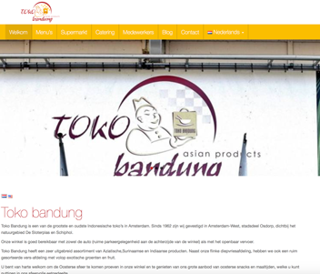

Toko Bandung
Website
Toko Bandung is een oud bedrijf dat sinds 1976 bestaat in Amsterdam-West.
Het bedrijf is in 2016 overgenomen. De nieuwe eigenaren wilden een nieuwe website.
De oude website was verouderd en had geen mobiel design of was mobile-first gebouwd.
De nieuwe website moest de kleuren van hun logo hebben en overzichtelijk zijn.
- Project naam: Toko Bandung website
- Opdrachtgever: Toko Bandung
- Rol: head of development
tokobandung.nl